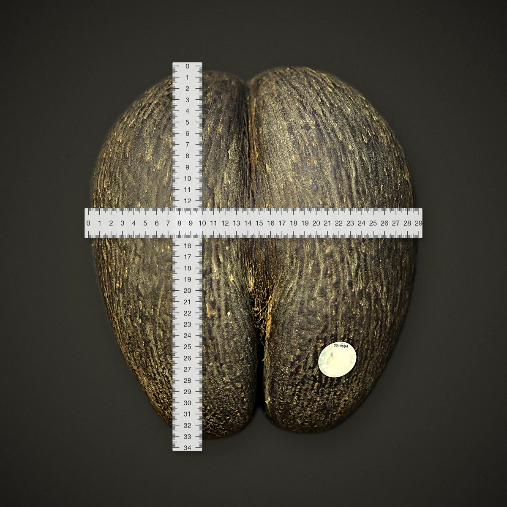

Journal
New here?
Start with areading path.
Three short collections, each read in one sitting. Pick the one that matches why you're here.


Did you know?
One nut,six surprises.
01 / 06
A single fruit can weigh up to 40 kg, and holds the largest seed in the plant kingdom.
Read: Fun & Crazy FactsHow long a single nut ripens on its mother palm before it falls to the forest floor.
Read: The Botanical WondersAll that remain in the wild, on just two islands: Praslin and Curieuse. There are no plantations anywhere.
Read: Why it's so expensiveHow long a Coco de Mer palm can live. The palms of the Vallée de Mai outlive many generations of the people who protect them.
Read: The Puzzling TruthThe wait before a young palm flowers for the first time. Patience is built into every nut.
Read: The Enigmatic PalmEvery legally sold nut carries its own numbered government seal, matched to its certificate and export permit.
Read: Why the paperwork mattersThe archive
Every story,in one place.
01 Extracting the Soul of the Coco de MerPerfumeJan 27, 2026 · 3 min
02
Extracting the Soul of the Coco de MerPerfumeJan 27, 2026 · 3 min
02 Fun & Crazy Facts About the Coco de Mer of the SeychellesThe NutSep 29, 2025 · 4 min
03
Fun & Crazy Facts About the Coco de Mer of the SeychellesThe NutSep 29, 2025 · 4 min
03 Why the Coco de Mer of the Seychelles Is So ExpensiveThe NutAug 4, 2025 · 3 min
04The Rare Treasure of the Coco de MerBuying GuidesMay 29, 2025 · 4 min
05
Why the Coco de Mer of the Seychelles Is So ExpensiveThe NutAug 4, 2025 · 3 min
04The Rare Treasure of the Coco de MerBuying GuidesMay 29, 2025 · 4 min
05 Exploring the Botanical Wonders of the Coco de MerThe NutApr 14, 2025 · 4 min
06
Exploring the Botanical Wonders of the Coco de MerThe NutApr 14, 2025 · 4 min
06 The Importance of Proper Documentation When Importing Coco de MerBuying GuidesFeb 27, 2025 · 4 min
07
The Importance of Proper Documentation When Importing Coco de MerBuying GuidesFeb 27, 2025 · 4 min
07 Tips for Buying the Coco de MerBuying GuidesJan 22, 2025 · 2 min
08
Tips for Buying the Coco de MerBuying GuidesJan 22, 2025 · 2 min
08 Is the Coco de Mer Eatable?The NutOct 7, 2024 · 2 min
09
Is the Coco de Mer Eatable?The NutOct 7, 2024 · 2 min
09 From Traditional Tools to Timeless ArtistryLegend & HistorySep 3, 2024 · 3 min
10
From Traditional Tools to Timeless ArtistryLegend & HistorySep 3, 2024 · 3 min
10 The Coco de Mer: A Botanical MarvelThe NutAug 12, 2024 · 3 min
11
The Coco de Mer: A Botanical MarvelThe NutAug 12, 2024 · 3 min
11 How Do I Choose? This Will HelpPerfumeJun 20, 2024 · 2 min
12
How Do I Choose? This Will HelpPerfumeJun 20, 2024 · 2 min
12 How to Get Noticed by Using PerfumePerfumeMay 13, 2024 · 2 min
13
How to Get Noticed by Using PerfumePerfumeMay 13, 2024 · 2 min
13 Your Fragrance Guide, Part 1PerfumeJan 28, 2024 · 2 min
14
Your Fragrance Guide, Part 1PerfumeJan 28, 2024 · 2 min
14 A Once-in-a-Lifetime Experience You Can't MissVisiting SeychellesDec 28, 2023 · 2 min
15
A Once-in-a-Lifetime Experience You Can't MissVisiting SeychellesDec 28, 2023 · 2 min
15 The Legend of the Coco de MerLegend & HistoryNov 16, 2023 · 2 min
16
The Legend of the Coco de MerLegend & HistoryNov 16, 2023 · 2 min
16 What to Do on a Rainy Day in SeychellesVisiting SeychellesOct 10, 2023 · 1 min
17
What to Do on a Rainy Day in SeychellesVisiting SeychellesOct 10, 2023 · 1 min
17 The Puzzling Truth About the Coco de MerThe NutAug 12, 2023 · 3 min
18
The Puzzling Truth About the Coco de MerThe NutAug 12, 2023 · 3 min
18 Coco de Mer: the Enigmatic Palm and Its Royal AdmirersLegend & HistoryJul 9, 2023 · 3 min
19Really? It's Made From That! Interesting Coco de Mer FactsThe NutJun 16, 2023 · 2 min
Coco de Mer: the Enigmatic Palm and Its Royal AdmirersLegend & HistoryJul 9, 2023 · 3 min
19Really? It's Made From That! Interesting Coco de Mer FactsThe NutJun 16, 2023 · 2 min
Extracting the Soul of the Coco de MerPerfumeJan 27, 2026 · 3 min
02Fun & Crazy Facts About the Coco de Mer of the SeychellesThe NutSep 29, 2025 · 4 min
03Why the Coco de Mer of the Seychelles Is So ExpensiveThe NutAug 4, 2025 · 3 min
04The Rare Treasure of the Coco de MerBuying GuidesMay 29, 2025 · 4 min
05Exploring the Botanical Wonders of the Coco de MerThe NutApr 14, 2025 · 4 min
06The Importance of Proper Documentation When Importing Coco de MerBuying GuidesFeb 27, 2025 · 4 min
07Tips for Buying the Coco de MerBuying GuidesJan 22, 2025 · 2 min
08Is the Coco de Mer Eatable?The NutOct 7, 2024 · 2 min
09From Traditional Tools to Timeless ArtistryLegend & HistorySep 3, 2024 · 3 min
10The Coco de Mer: A Botanical MarvelThe NutAug 12, 2024 · 3 min
11How Do I Choose? This Will HelpPerfumeJun 20, 2024 · 2 min
12How to Get Noticed by Using PerfumePerfumeMay 13, 2024 · 2 min
13Your Fragrance Guide, Part 1PerfumeJan 28, 2024 · 2 min
14A Once-in-a-Lifetime Experience You Can't MissVisiting SeychellesDec 28, 2023 · 2 min
15The Legend of the Coco de MerLegend & HistoryNov 16, 2023 · 2 min
16What to Do on a Rainy Day in SeychellesVisiting SeychellesOct 10, 2023 · 1 min
17The Puzzling Truth About the Coco de MerThe NutAug 12, 2023 · 3 min
18Coco de Mer: the Enigmatic Palm and Its Royal AdmirersLegend & HistoryJul 9, 2023 · 3 min
19Really? It's Made From That! Interesting Coco de Mer FactsThe NutJun 16, 2023 · 2 min